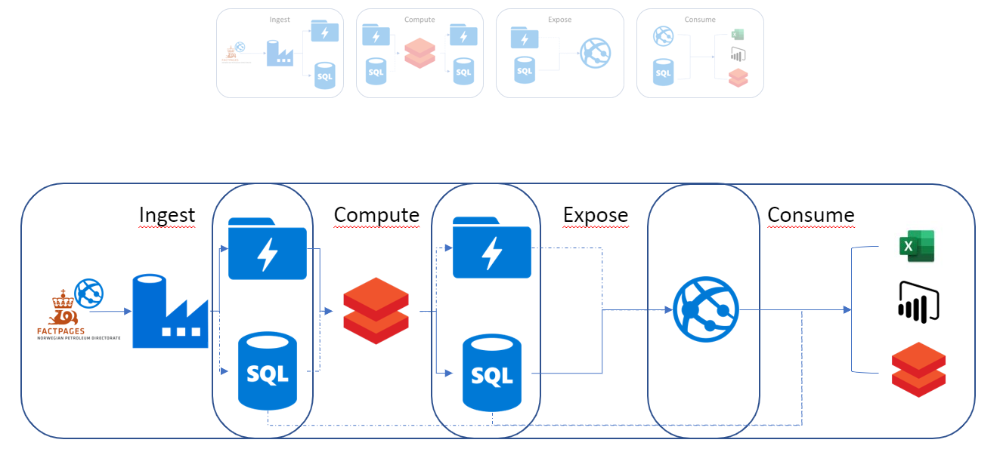

What we Covered
What we Didn't Cover
- DevOps
- Security
- All the options
- Lifecycle
- Automation of build, testing. Why is this important.
- Security - Dropped for simplicity, but important to understand and include
- All the options
- Ways of working with Azure (SDK, CLI, ARM templates, ...)
- Different technologies.
- Operations, monitoring. Also ties in with Devops
| Space | Forward |
|---|
| Right, Down, Page Down | Next slide |
|---|
| Left, Up, Page Up | Previous slide |
|---|
| G | Go to slide number |
|---|
| P | Open presenter console |
|---|
| H | Toggle this help |
|---|